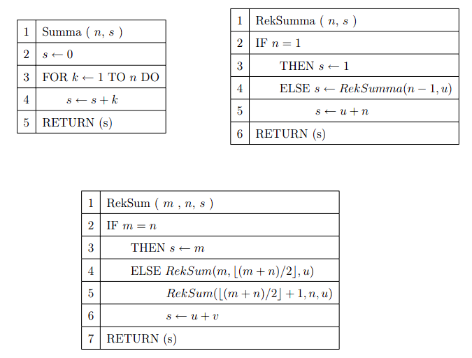

Algoritmusok
Algoritmusok
 Mesterséges intelligencia
Mesterséges intelligencia
Ez az aloldal az algoritmusok tárgyról szól. Az "Algoritmusok és
Vizsgálatuk" tantárgy egy izgalmas és alapvető kurzus a
számítástechnika világában. Ezen a kurzuson azt tanuljuk, hogyan
tervezzünk és értékeljünk algoritmusokat, amelyek az informatikai
problémák megoldásához nélkülözhetetlenek. Megismerjük a különböző
algoritmusok tervezési paradigmáit, és megtanuljuk, hogyan
válasszunk megfelelő megoldást egy adott problémára.
A tantárgy során különös figyelmet szentelünk az algoritmusok hatékonyságának és teljesítményének elemzésére, beleértve az idő- és memóriaösszetettség vizsgálatát is. A kurzus segít fejleszteni a kritikus gondolkodást és problémamegoldó képességeket, amelyek kulcsfontosságúak a számítógépes szakmában való sikeres szerepléshez. Ráadásul izgalmas és gyakorlati példákon keresztül mélyítjük el a tananyagot.

A tantárgy során különös figyelmet szentelünk az algoritmusok hatékonyságának és teljesítményének elemzésére, beleértve az idő- és memóriaösszetettség vizsgálatát is. A kurzus segít fejleszteni a kritikus gondolkodást és problémamegoldó képességeket, amelyek kulcsfontosságúak a számítógépes szakmában való sikeres szerepléshez. Ráadásul izgalmas és gyakorlati példákon keresztül mélyítjük el a tananyagot.
Források: